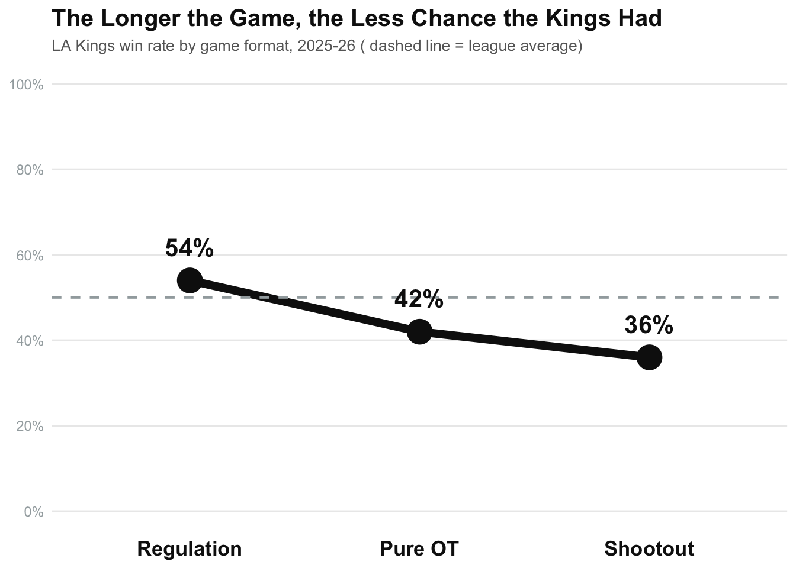
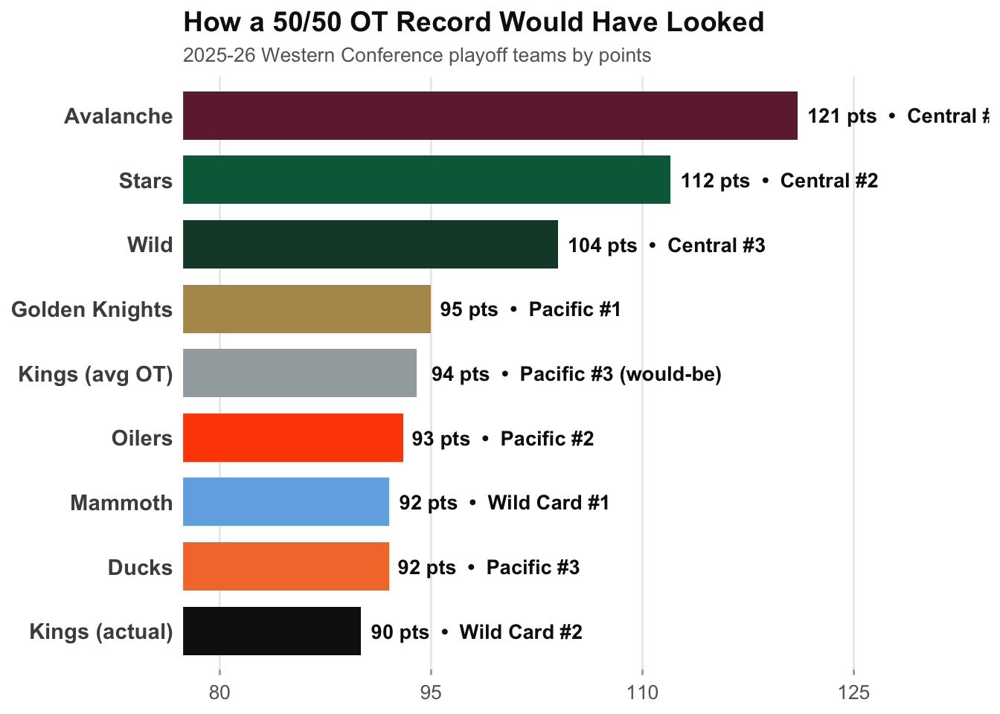

How The Los Angeles Kings Set the NHL Record for Overtime Losses in a Season
nhl
kings
hockey
sports
Author
Charlie Fox
Published
April 25, 2026
The Los Angeles Kings finished the 2025-26 NHL season with 20 overtime or shootout losses in the regular season, breaking the NHL record for a team’s single season overtime losses. The Kings were a competitive team as they made the playoffs, however they just got swept by the the Colorado Avalanche. Game after game when it came time to close out in the third or extra time, the Kings just couldn’t do it. This is the story of what went wrong.
No game felt safe for the Kings in overtime. They were good at getting the one point overtime gives, but they found themselves in overtime a record amount of times.
The Kings played 33 of their 82 games in overtime this season, that makes 40% of their entire season decided in extra time. No team in the NHL lived in overtime like LA did. And while getting to overtime that often shows they were competitive in almost every game, it also masked the brutal reality that they couldn’t close.
The Shootout Was the Real Killer
When you dig into those 33 overtime games, something stands out. The Kings weren’t just bad in overtime specifically, they were getting destroyed in the shootout. In pure 3-on-3 overtime they went 8-11, which is bad but compounded with a 5-9 shootout record, they completely shot themselves in the foot.
Code
slope_data <-data.frame(format =factor(c("Regulation", "Pure OT", "Shootout"),levels =c("Regulation", "Pure OT", "Shootout")),rate =c(54, 42, 36))ggplot(slope_data, aes(x = format, y = rate, group =1)) +geom_line(linewidth =2.5, color ="#111111") +geom_point(size =7, color ="#111111") +geom_hline(yintercept =50, linetype ="dashed", color ="#A2AAAD", linewidth =0.7) +geom_text(aes(label =paste0(rate, "%")),vjust =-1.4, fontface ="bold", size =5.5, color ="#111111") +scale_x_discrete(expand =expansion(mult =c(0.3, 0.3))) +scale_y_continuous(limits =c(0, 100), breaks =seq(0, 100, by =20),labels =function(x) paste0(x, "%")) +labs(title ="The Longer the Game, the Less Chance the Kings Had",subtitle ="LA Kings win rate by game format, 2025-26 ( dashed line = league average)",x =NULL,y =NULL ) +theme_minimal() +theme(plot.title =element_text(face ="bold", size =15, color ="#111111"),plot.subtitle =element_text(size =10, color ="#666666"),panel.grid.minor =element_blank(),panel.grid.major.x =element_blank(),axis.text.x =element_text(face ="bold", size =13, color ="#111111"),axis.text.y =element_text(color ="#A2AAAD") )

The shootout is essentially a skills competition with three penalty shots, and has almost nothing to do with how well you played the previous 65 minutes of hockey. And the Kings went 5-9 in shootouts. That’s a 36% win rate in a format that should be close to a true coin flip. I think that’s the most interesting part of this whole story it wasn’t just that they couldn’t finish in overtime, it’s that they kept losing a format that’s designed to be split 50/50. Nine shootout losses is brutal, where league average shootout win rate hovers around 50%. If the Kings were just average in the shootout they would have had 4-5 fewer OT losses and this is a completely different season. This slope chart shows the clear pattern of the Los Angeles Kings this season, the longer the game progressed, the less likelihood they had to win.
20 Points Left on the Ice
Every overtime or shootout loss costs a team exactly one point. You get the point for making it to overtime, but you don’t get the second one for winning. Over 20 losses that’s 20 points that could have been on the board but weren’t. Let’s look at what that actually meant for the Kings in the Western Conference standings.
Code
west_playoffs <-data.frame(team =c("Avalanche", "Stars", "Wild","Golden Knights", "Oilers", "Ducks","Mammoth", "Kings (actual)", "Kings (avg OT)"),points =c(121, 112, 104, 95, 93, 92, 92, 90, 94),seed_label =c("Central #1", "Central #2", "Central #3","Pacific #1", "Pacific #2", "Pacific #3","Wild Card #1", "Wild Card #2", "Pacific #3 (would-be)"))team_colors <-c("Avalanche"="#6F263D","Stars"="#006847","Wild"="#154734","Golden Knights"="#B4975A","Oilers"="#FF4C00","Ducks"="#F47A38","Mammoth"="#71AFE5","Kings (actual)"="#111111","Kings (avg OT)"="#A2AAAD")ggplot(west_playoffs, aes(x = points, y =reorder(team, points), fill = team)) +geom_bar(stat ="identity", width =0.75) +geom_text(aes(label =paste0(points, " pts • ", seed_label)),hjust =-0.05, fontface ="bold", size =3.6, color ="#111111") +scale_fill_manual(values = team_colors) +scale_x_continuous(breaks =seq(80, 125, by =15)) +coord_cartesian(xlim =c(80, 132)) +labs(title ="How a 50/50 OT Record Would Have Looked",subtitle ="2025-26 Western Conference playoff teams by points",x =NULL,y =NULL ) +theme_minimal() +theme(plot.title =element_text(face ="bold", size =14, color ="#111111"),plot.subtitle =element_text(size =10, color ="#666666"),legend.position ="none",panel.grid.major.y =element_blank(),panel.grid.minor =element_blank(),axis.text.y =element_text(face ="bold", size =11),axis.text.x =element_text(color ="#666666", size =10),axis.ticks.x =element_line(color ="#A2AAAD") )

The Kings finished with 90 points. With a league-average OT record, the King would have salvaged 4 extra points and finished at 94 points. That’s the difference between a wild card entry and potentially a top-3 seed in the Pacific. Instead of drawing Colorado in the first round, they might have had home ice, certainly a more favorable matchup and much more real shot than what they got. Those 20 OT losses didn’t just break a record, they directly shaped who the Kings had to play in April.
They Dug Their Own Hole in the Regular Season
Here’s what I keep coming back to when I think about this Kings season. The Kings just got swept by Colorado in the first round. Games 1 and 2 were both 2-1 finals, the kind of tight games the Kings had been playing all season. They even lost Game 2 in overtime, which at this point felt ironic. Then Game 3 slipped away 4-2, and by Game 4 it was a 5-1 collapse to end their season. The Kings walked into that series with the bad habit of being unable to close games out, and while they were more damaged and fatigued than the rest of the league.
They played 33 overtime games this season, compared to the Avalanche who rarely went to overtime, only playing in OT 18 times. Those are extra minutes on tired legs, extra wear on goalies who were already playing record ice-time, and extra strain on a roster that needed to be fresh for the Stanley Cup push. By the time the playoffs came around, I think the tank was already running low.
Because of those 20 OT losses, the Kings entered the playoffs as the final wild card in the West. This set up a first-round matchup against the winners of the President’s Trophy in the Colorado Avalanche.
The overtime losses didn’t just cost them points. They cost them rest, position in the standings, and ultimately their season. The Colorado sweep wasn’t just bad luck. The Kings spent 82 games setting themselves up for a first-round matchup against the best team in the NHL.